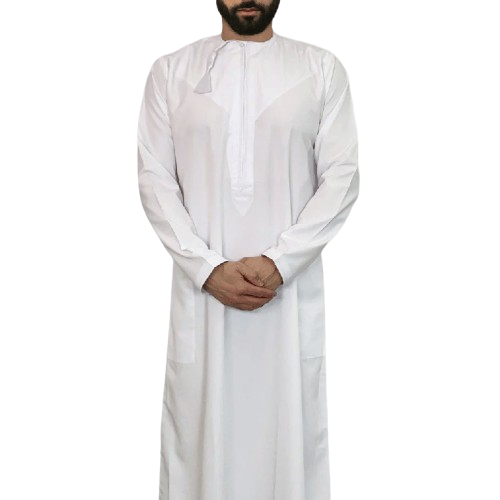
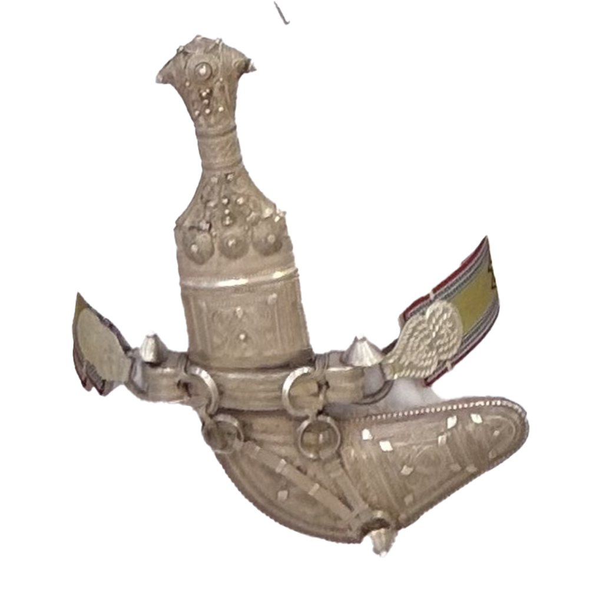
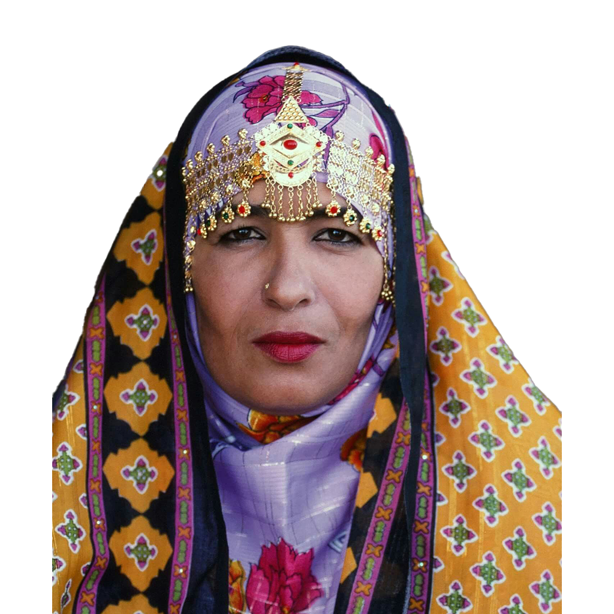
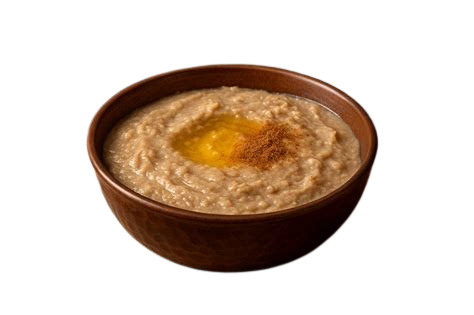
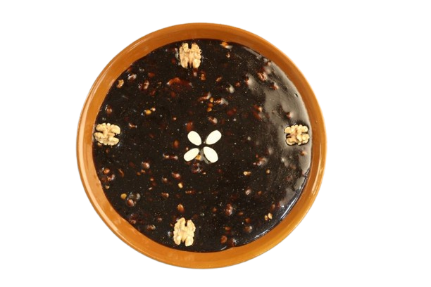
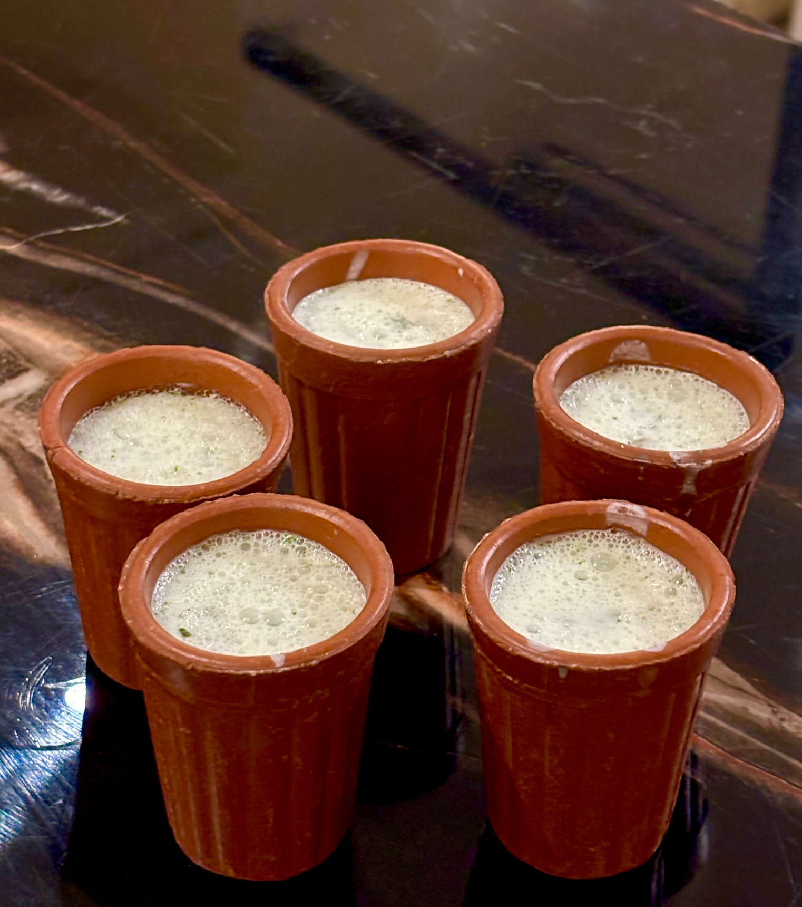

Long ankle length robe, usually white or light colored
Everyday wear for Omani men, symbol of national identity and modesty

Massar
Traditional headwear for Omani men
Symbol of cultural heritage and social status
Khanjar
Traditional dagger with a distinctive curved blade
Symbol of Omani heritage and craftsmanship

Omani Traditional Dress
Traditional outer garment for Omani women
Symbol of modesty and cultural identity

Cuisine
The Arabian Peninsula’s hidden gem, Oman, offers visitors a culinary experience that combines aromatic spices, slow-cooking methods, and fresh ingredients. With a cuisine shaped by its coastal location, desert landscape, and centuries of trade, Oman’s famous food carries influences from Indian, Persian, East African, and Arabian cooking traditions. In this guide, we’ll explore twenty authentic Omani dishes that showcase the country’s diverse flavors, often described as rich, diverse, and unforgettable. Some recipes even date back to the 15th century, while others are modern adaptations enjoyed by families across Oman in the 21st century.
Harees
Harees brings comfort during the holy month of Ramadan through its simple yet nourishing qualities. This porridge-like dish combines wheat berries and meat (usually lamb or chicken) that cook slowly until they merge into a smooth, thick consistency.

Halwa
Halwa stands as Oman’s most beloved sweet, a thick, jelly-like dessert that’s essential at celebrations and when welcoming guests. This must try food in Oman combines sugar, honey, rose water, eggs, nuts, and spices into a distinctive treat that’s uniquely Omani.

Laban (yogurt Drink)
Yoghurt, a staple in Oman’s desert cuisine, offers a refreshing way to preserve milk, often enjoyed with mint in summer. Bahari, Dina Macki’s cookbook, shares authentic Omani recipes and cultural stories, bringing the richness of Oman’s food heritage to life.

Music of Oman
Oman’s traditional music and dance are deeply tied to its history and identity, blending influences from Arabia, Africa, Persia, and India.
With over 130 folk styles, the music ranges from maritime chants and Bedouin desert songs to religious praise and festive wedding tunes, often accompanied by instruments like the Oud, Qanun, Rababa, drums, and flutes.
Dance forms such as Al-Bar’ah, Razha, Al-Azi, Sharh, and Liwa vividly express themes of bravery, love, and community, making these art forms living traditions that preserve Omani culture across generations.